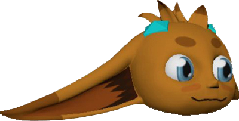
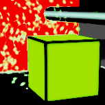
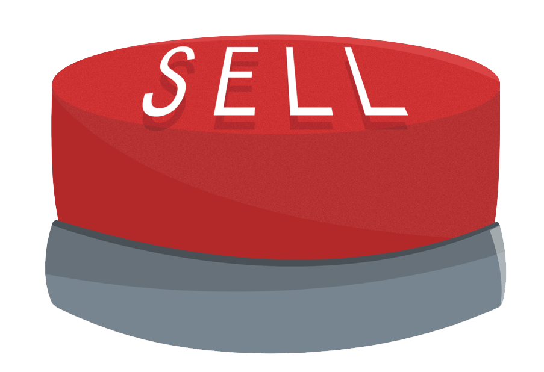
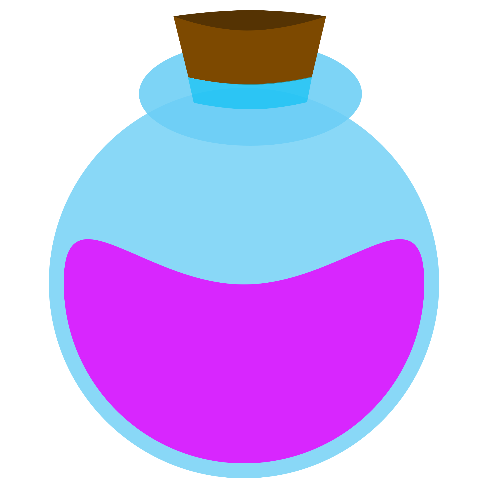
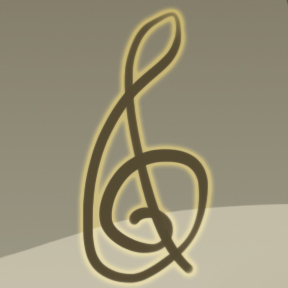
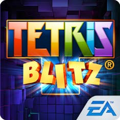

These are all the projects I've worked on as a Game Developer.

Card Link
A VR-based card game, this is currently being developed as part of my Masters thesis. I am the programming lead. This game is expected to be released August 4.

Techno-Geo
A VR-based music game, this was a Rapid Prototype developed at UCF Florida Interactive Entertainment Academy in 2 weeks. This had players moving a virtual platform
to synchronize with beats playing in the game. I worked on integrating audio into Unreal, making blueprints to synchronize beats and fade in/out tracks to make dynamic music.

Task Attack
A simpler game in which 5 students of UCF Florida Interactive Entertainment Academy tried to tell a story using the environment. In this, I created the core loop and
mini-games such as rendering a pseudo-random "stock ticker" graph onto a raw texture in real time, a typing game, and recursive faders for UI to be faded in/out.
I also scored the background music for the game.

Spirit Chaser
Implemented the UI and screen management systems that would allow for transitioning between different menus and game. Also scored the background music for the game.

Hues of Hope
Implemented dynamic score - where layered tracks would fade in and out depending on the player's actions, implemented the UI inventory system, implemented the dialogue
system which synced subtitles to the dialogue and queued plays, and co-wrote, directed, and post-processed 100+ lines of dialogue in the game. I also composed and recorded
the score.
Proto:Pariah
Implemented core games systems such as the game loop, player movement, collision detection, and level management. Facilitated level creation by designers through PhotoShop
by writing a script to export layouts. Also wrote the reader module in the game that would read these and create the level. Wrote the build script that would automatically
generate and package the final binary. Composed and recorded the background track for the game, implemented all the sounds and wrote the audio system.

Tetris Blitz
Worked on the complete reboot of the game. Moved the rendering and scene management engine from EA-proprietary to cocos2d-x. Implemented secure memory protection that
helped prevent hackers from tampering with the game data. Wrote a battles system that allowed players to compete against each other (PVP-mode). Implemented multiple
new powerups, which involved extending and maintaining tweeners and sprite animations systems.
Heroes of Dragon Age
I maintained the FTUE and the loading systems in the game.
World Series of Poker
I was part of the team that helped transition the game to Caesar's Interactive Entertainment. Worked on UI to display appropriate messaging and Call To Action.
Overcame the tough challenge of migrating even anonymous users without losing data.
Monopoly Hotels
I ported over the game to a new platform services engine from a legacy one - these included telemetry, user authentication, identity, login and push notification systems.